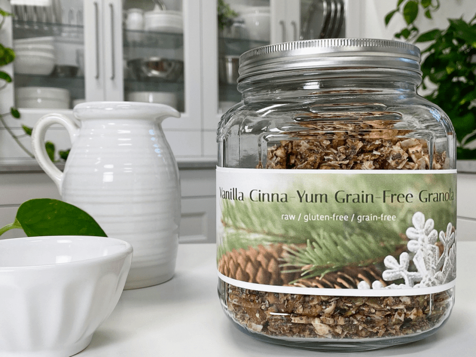
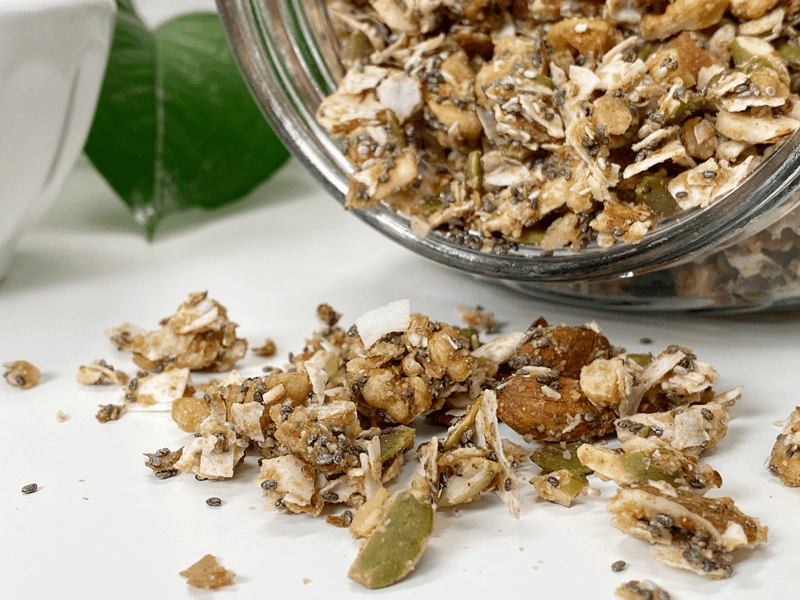

Vanilla Cinna-Yum Grain-Free Granola
In this Vanilla Cinna-Yum Grain-Free Granola, I swapped out the “typical” oats for a mixture of seeds and sprouted nuts—making it completely gluten-free and Paleo-friendly. Fragrant vanilla, maple syrup, and cinnamon give these crunchy clusters the classic granola taste you crave, minus the artificial ingredients.

Cinnnamomomom
Oh, I do love my cinnamon, but not just ANY cinnamon. I strictly use Ceylon cinnamon, which you can read more about (here). Back when I was around the age of twelve, a group of us sat around playing, Truth, or Dare. It was all innocent, and the ideas we came up with were harmless until it became my turn. I took a dare. I was dared to eat a spoonful of cinnamon. I rolled my eyes backward and let out a smirk. How easy is that?!
Soon a spoon of cinnamon was being presented to me. Without hesitation, I grabbed the spoon and dumped the whole spoonful into my mouth. Commence choking-hazard! The more I choked, the deeper my inhales pulled the fine powder into my throat! That was a vicious cycle that felt as if it wasn’t evergoing to end. I ran to the bathroom, trying to spit the contents of my mouth into the toilet. Friends gathered as I choked and gasped for air. It seemed like an eternity as tears rolled down my cheeks from choking and from the fear of passing out.
After some time, the issue resolved itself, and here I sit, sharing my story. Shew, that was a close call. Thankfully, the tragic event didn’t affect my love for cinnamon. Moral of the story, if you craving cinnamon, eat a spoon of Vanilla Cinna-Yum Grain-Free Granola NOT a spoon of cinnamon powder! Just saying.

Is this Granola Sweet?
I intended for this granola to be low-sugar. If you wish for it to be sweeter, go ahead and add more maple syrup, but be sure to give the batter a taste test before doing so. If you’re not opposed to using stevia and you want this granola to be a bit sweeter, I would recommend using the same about of maple syrup but add liquid NuNaturals stevia until it reaches the level of sweetness. This way, you get that sugary hit without it affecting your insulin levels too much.
Do I HAVE to Soak the Nuts & Seeds?
Excellent question, my friend. First off, did you know that all nuts and seeds contain phytic acid and enzyme inhibitors? For those of you who have been around for a while, this is old news, BUT I can’t skip this teaching opportunity for those of you who are new to this way of eating. Phytic acid interferes with the body’s ability to absorb nutrients.
While many traditional cultures naturally soaked or sprouted nuts/seeds, this practice is no longer common, mainly because it’s time-consuming. For me, it is a regular practice. It’s simple, inexpensive, and can significantly increase the nutrient content of the nuts/seeds you consume, therefore, it’s a no-brainer to me. Frankly, it’s your call whether you skip this process or not. If you are on the fence about this process, do a test. Eat some nuts raw, unsoaked, and dried. Then try some that have been soaked and dried.
Throughout the taste testing trials, I found that once the granola had sat in milk (enjoyed it as a cereal), the vanilla flavor really popped. The milk also helps activate the chia seeds and flax, giving it a more porridge-like texture. It’s a great snack as well, but my favorite way of eating it is with macadamia milk. Umm mmm. blessings, amie sue
 Ingredients
Ingredients
- 2 cups (235 g) raw almonds, soaked
- 2 cups (195 g) raw walnuts, soaked
- 1 cups (175 g) raw pumpkin seeds, soaked
- 2/3 cup (119 g) raw chia seeds
- 1/2 cup (125 g) almond flour/meal
- 1/4 cup (28 g) flax meal
- 1 Tbsp (7 g) ground Ceylon cinnamon
- 1 tsp (7 g) sea salt
- 2 cups (110 g) unsweetened dried shredded coconut
- 1/2 cup (155 g) maple syrup
- 1 Tbsp (11 g) pure vanilla extract
Preparation
- In a food processor, fitted with the “S” blade, combine the almonds, walnuts, pumpkin seeds, chia seeds, almond meal, cinnamon, and salt. Pulse everything together to just enough to mix it and to break down the larger nuts. Pour into a large bowl.
- BUT… you can skip the food processor part if you want real chunky granola, and on the other hand, you can process the nuts and seeds to a small crumble. Customize it to your liking.
- To the bowl, now add in the dried coconut, maple syrup, and vanilla extract. With your hands, dive in and mix everything really well (making sure to coat the dry ingredients with the wet.
- Spread the batter onto a non-stick dehydrator sheet. You can either drop it on the sheet in clusters or spread it as a whole sheet to break into brittle-sized pieces when done drying.
- I used 3 dehydrator trays with roughly 2 cups of batter per tray.
- Dehydrate at 145 degrees (F) for 1 hour, then reduce to 115 degrees (F) and continue to dry to 10+ hours (or until completely dry).
- I ended up breaking up the granola sheets and processing them in the food processor to create more a small crumble to enjoy as a cereal.
- Store in an airtight container on the counter for several weeks or in the freezer for several months.
© AmieSue.com